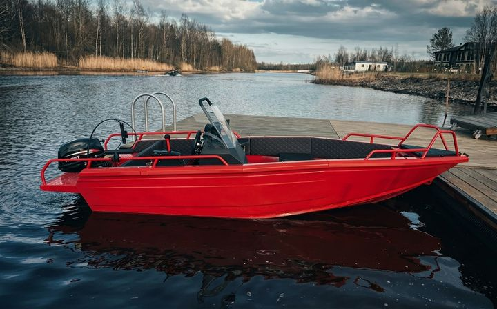
Лодка №1
8 500 ₽ / день
Дистанционный мотор · 20 л.с. · эхолот
- Длина
- 5 м
- Экипаж
- до 4
- Мотор
- 20 л.с.
- Корпус
- алюминий
- Год
- 2025
Аренда лодок · Ладожское озеро · д. Назия
Алюминиевые лодки 5 м с мотором 20 л.с. у пирса в деревне Назия, 10 минут от Мурманского шоссе.
от 8 500 ₽ / день
Выбор лодки
Прокат моторных лодок на Ладоге — алюминиевый корпус, мотор 20 л.с., дистанционное управление. В парке две одинаковые лодки у пирса в деревне Назия.

8 500 ₽ / день
Дистанционный мотор · 20 л.с. · эхолот
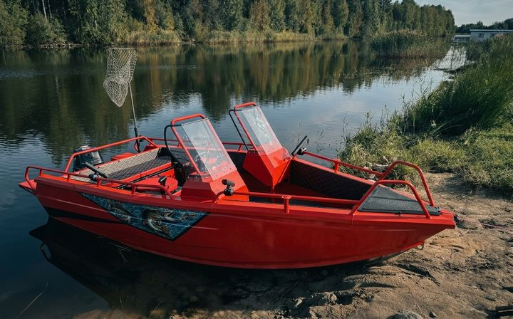
8 500 ₽ / день
Дистанционный мотор · 20 л.с. · эхолот
Состав аренды
При аренде лодки на Ладоге бензин, эхолот и спасжилеты включены в стоимость — без доплат при выдаче.
Уже установлен и настроен. Не нужно арендовать или покупать отдельно для рыбалки.
20 л включены в стоимость аренды — без доплат после поездки.
Выдаются вместе с лодкой — не нужно привозить своё.
Не нужно долго искать, где рыбачат — точки уже отмечены.
Без неудобного берегового спуска — лодка у пирса на базе отдыха.
Аренда без залоговой суммы при выдаче.
Сценарии
Рыбалка на Ладоге, прогулка до крепости Орешек, выход на острова или первый раз за штурвалом моторной лодки.
Проверенные точки рыбалки на Ладоге — уже в эхолоте и карте.
Выход на воду до 4 человек на одной лодке — без подготовки и лишних сборов.
Спокойный выход на воду для двоих — острова, Орешек и тихие маршруты Ладоги.
Простое управление и понятный выход на воду — опыт не требуется.
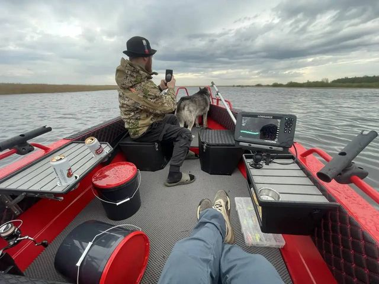
Сервис и качество
Алюминиевые лодки 2025 года — проверяем мотор, корпус и эхолот перед каждым сезоном. Гости возвращаются, когда каждый выход предсказуем: состояние лодок стабильное, условия аренды одинаковые от раза к разу.
Рыбалка на Ладоге
Ладога подходит как для береговой рыбалки на мелководье, так и для выхода на глубину за хищником.
Хищная рыба
Нехищная рыба
Глубины и зоны ловли
Глубины 0,5–2 м · до 3 км от берега
Окунь, плотва, краснопёрка
Глубины 5–10 м · от 4 км от берега
Судак, щука
Улов гостей
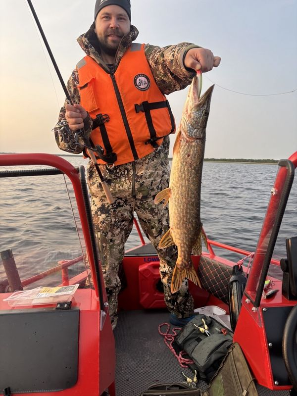
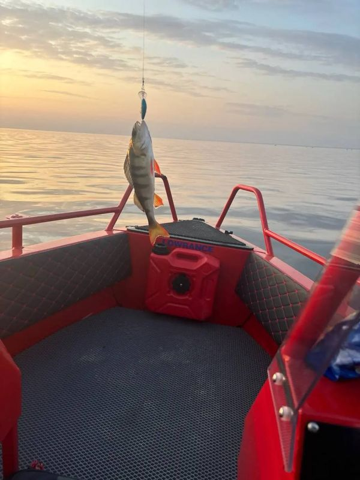
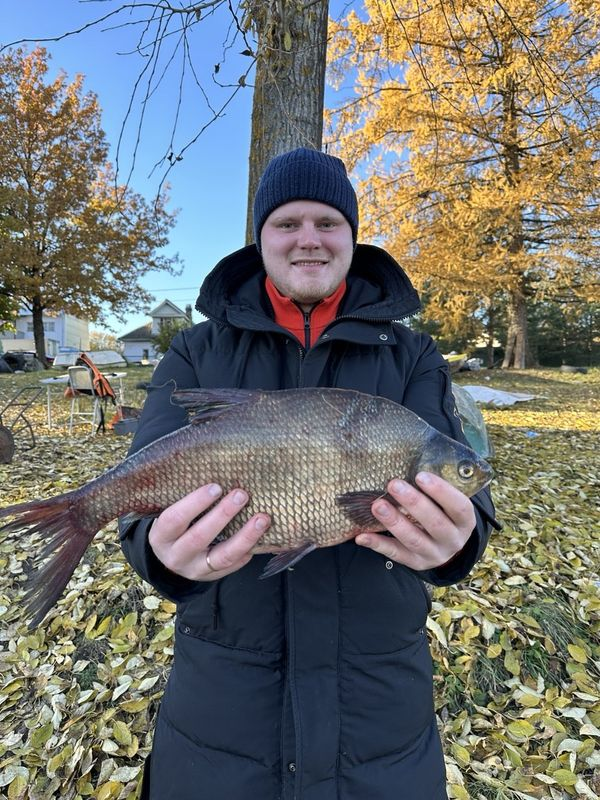
Снасти и рыбалка
Снасти для рыбалки на Ладожском озере: спиннинги для судака и щуки, удочки для поплавочной ловли, воблеры и силикон под любые условия.
Классические удочки для спокойной рыбалки с берега и лодки.
Снасти для ловли щуки, судака и окуня в активной рыбалке.
Готовые комплекты: катушки, леска и базовая оснастка.
Воблеры, блёсны и силикон под разные условия ловли.
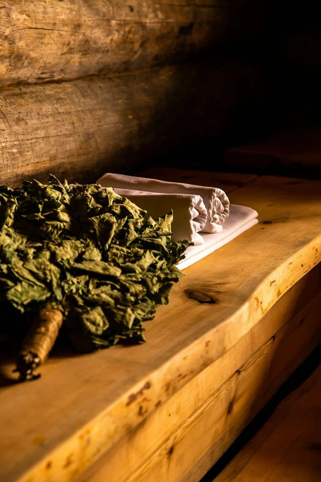
Отдых после рыбалки
После рыбалки на Ладоге — тёплая баня у пирса, горячая и ледяная купели, наваристая уха из свежего улова.
После рыбалки — тёплая баня рядом с пирсом.
Просторный тёплый бассейн.
Ледяная и горячая купели прямо на улице.
Наваристая уха по возвращении с рыбалки. Можно приготовить шашлык на мангале.
Фото
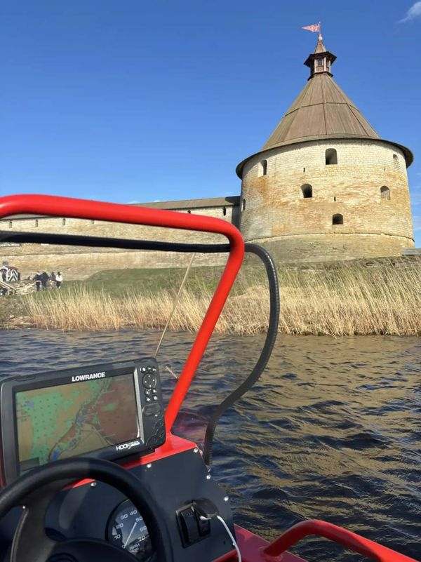
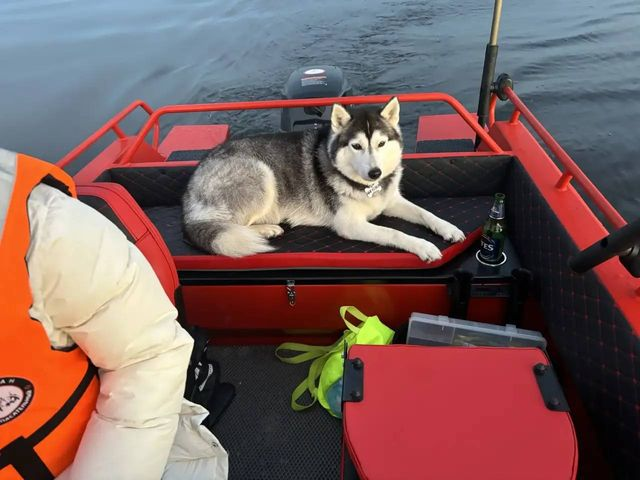
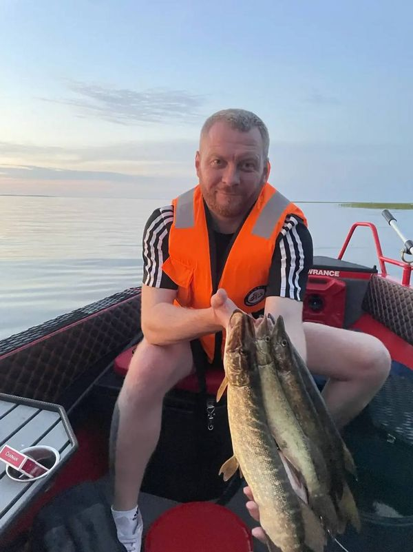
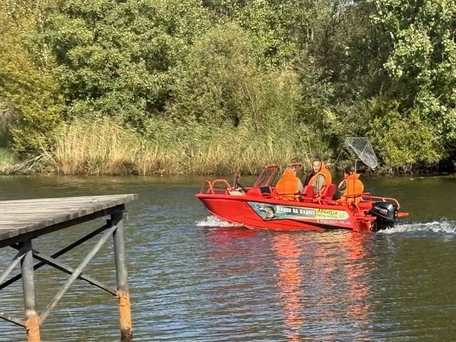
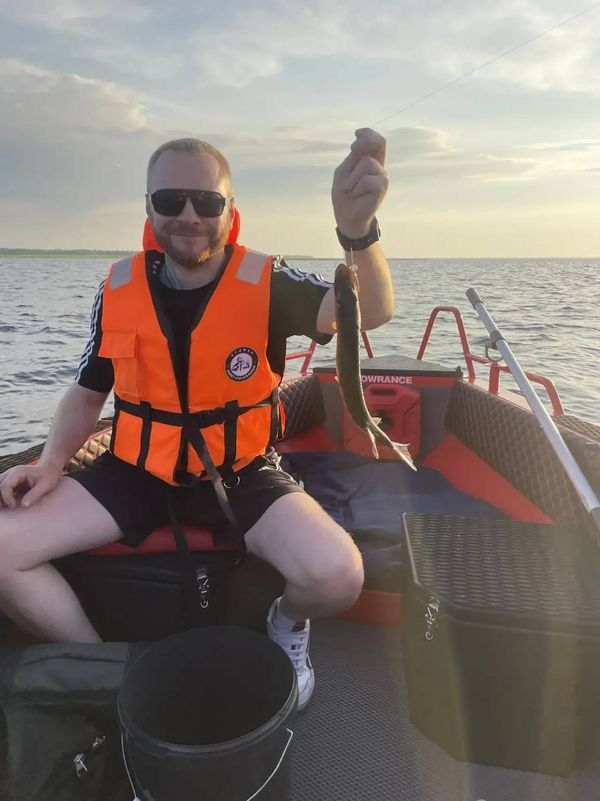
Как это работает
Можно получить лодку в день обращения. Без скрытых доплат и отдельного сбора залога.
Выберите лодку и дату в форме или позвоните — уточним свободную лодку из двух в парке.
Краткий инструктаж, спасжилеты, эхолот и бензин уже с вами.
Рыбалка по готовым точкам, поездка к Орешку, острова — права на мотор не требуются.
Тот же пирс. Без доплат за топливо и без возврата залога — его не было.
Новоладожский канал, 27, деревня Назия, Кировский район
Вопросы
8 500 ₽ за день. Бензин (20 л), эхолот и спасжилеты входят в стоимость, залога нет.
Нет. Права на мотор для аренды не требуются.
Залога нет — аренда без залоговой суммы при выдаче.
Нет. Бензин, эхолот и спасжилеты входят в аренду.
Да, можно получить лодку в день обращения — уточните свободную из двух при бронировании.
Длина 5 метров, до 4 человек. В парке 2 одинаковые лодки.
У пирса на базе отдыха: Новоладожский канал, 27, деревня Назия. Удобный спуск с пирса, рыболовные точки рядом.
До крепости Орешек, на острова, на рыбалку по готовым точкам на карте.
Локация
Новоладожский канал, 27, деревня Назия, Кировский район, Ленинградская область · удобный асфальтовый подъезд
Новоладожский канал, 27, д. Назия